My House · C08 plan options
Claude Code · 27 Oct 2026 · three reworked versions of the owner's own 0109-r5 plans (A, B, C)
Compare the options
The table shows only what differs. Below it, the same floor of each option sits side by side; rooms that differ are outlined in orange dashes.
| C08-1 Family-hall house · from owner's B | C08-2 Reading-bay house · from owner's A | C08-3 Kitchen-at-the-heart house · from owner's C | |
|---|---|---|---|
| Main floor: south side, west → east | Kitchen → Dining 6–8 → Living | Kitchen → Dining 6–8 → Living + Ne Prayer Bay | Dining 6–8 → Kitchen → Living |
| Master bedroom | N · 23 m² | N · 15 m² | N · 16 m² |
| Master suite extras | Ensuite 8 m², Dress 5 m² | Ensuite 6 m², Linen 2 m², Dress 4 m² | Ensuite 8 m², Dress 4 m², Master Terrace 9 m² |
| Living | 43 m² · SE | 46 m² · E | 43 m² · SE |
| Kitchen | 15 m² · SW | 15 m² · SW | 15 m² · S |
| Dining | 14 m² · S | 14 m² · S | 15 m² · SW |
| Lower floor NE corner | Covered Terrace (outdoor) | Grandparents / Guest | Grandparents / Guest |
| Lower floor east middle | Garden Lounge | Garden Court (outdoor) | Garden Lounge |
| Lower floor SE corner | Grandparents / Guest | Garden Lounge + Tea Bar | Study / Play |
| Grandparents' room | 21 m² · SE | 18 m² · NE | 20 m² · NE |
| Grandparents' seated ensuite | 6 m² · S | 5 m² · N | 5 m² · N |
| Garden lounge | 23 m² · E | 38 m² · S | 23 m² · E |
| Lower family hall | 34 m² · centre | 29 m² · centre | 34 m² · centre |
| Study / play | none | none | 31 m² · SE |
| Main floor: terraces | South Terrace 50, East Terrace 27 m² | South Terrace 48, East Terrace 41 m² | Master Terrace 9, South Terrace 45, East Terrace 33 m² |
| Lower floor + garden: terraces | Covered Terrace 30, Garden Terrace 41 m² | Garden Court 16, Garden Terrace 41 m² | Garden Terrace 41 m² |
| Total floor area | 525 m² | 524 m² | 553 m² |
| Ground covered | 296 m² (49% of field) | 288 m² (48% of field) | 307 m² (51% of field) |
| Main / lower floor ends at | u 19.2 / u 22.2 m | u 18.6 / u 21.6 m | u 19.2 / u 22.2 m |
| East garden (inside setbacks) | 78 m² | 88 m² | 78 m² |
| Earthwork (inferred) | cut 233 m³ · fill 128 m³ | cut 234 m³ · fill 141 m³ | cut 234 m³ · fill 128 m³ |
Identical in every option (3 items)
| C08-1 Family-hall house · from owner's B | C08-2 Reading-bay house · from owner's A | C08-3 Kitchen-at-the-heart house · from owner's C | |
|---|---|---|---|
| Dining ↔ living | separate rooms | separate rooms | separate rooms |
| Road level: terraces | Office Roof Deck 38 m² | Office Roof Deck 38 m² | Office Roof Deck 38 m² |
| Your open decisions | 2 | 2 | 2 |


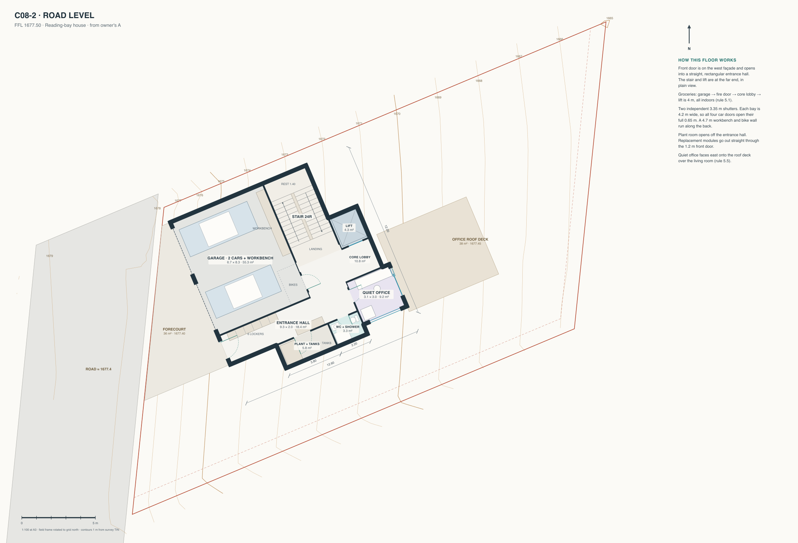

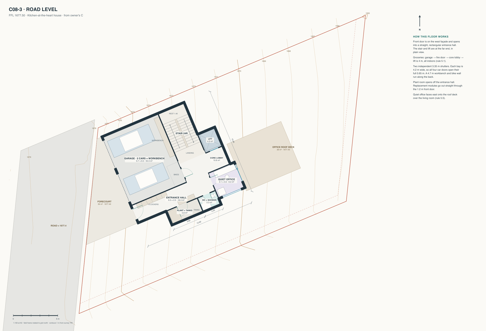
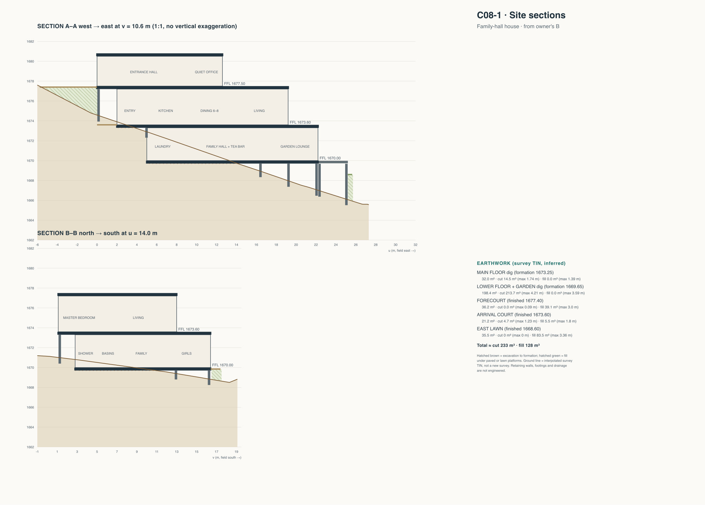
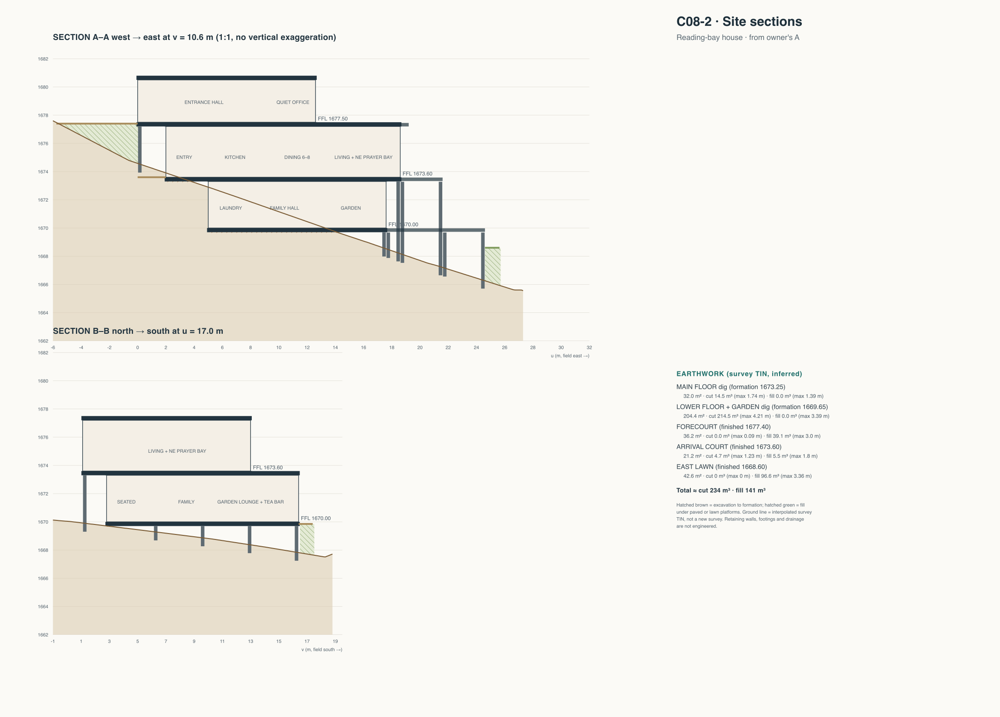
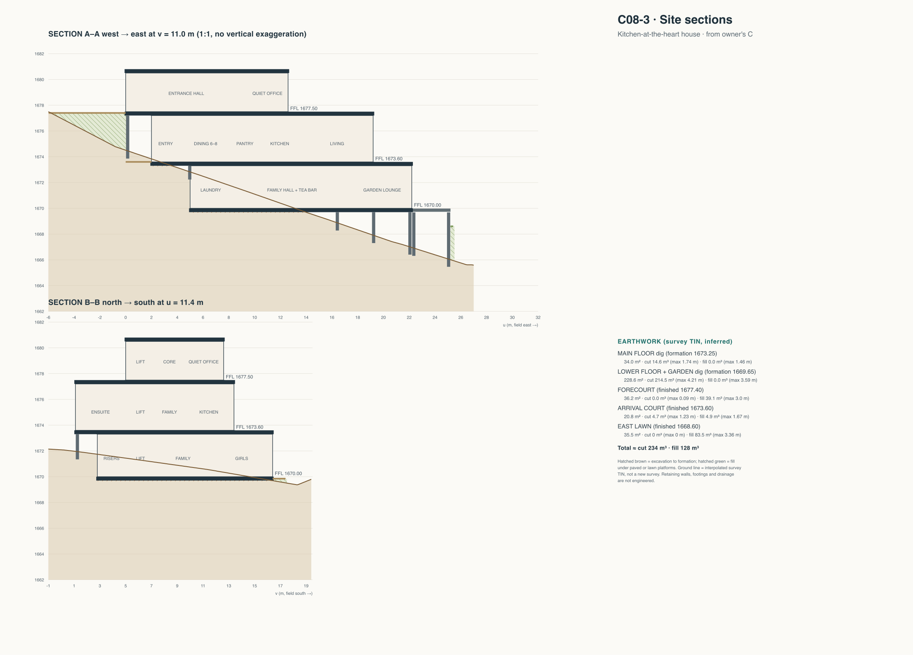
The field
- Ground falls 11.4 m from the road side (west, 1677.0) to the east boundary (1665.7), about 38%.
- It also falls north → south: 3.8 m along the west side and about 1.5–3 m across the middle, roughly 10–25%.
- So the house steps down to the east. Its buried NW corner holds the stores, wet rooms and core; day rooms and bedrooms take the open south and east.
- All levels come from the stored survey TIN. The site is still SITE_NEEDS_VERIFICATION, with UTM zone, datum and legal boundary unconfirmed.
Why C07 felt robotic
- Rooms are rectangles pushed into a grid, and the grid comes first. Living, dining and lounge sizes come out as whatever was left over (Garden Lounge 37 m², Family Hall 31.8 m², Boys 22 m²).
- The west court is an L-shaped slot running along the garage. You reach the 'front door' through it, which is the 'strange passage' you rejected (stmt-021).
- Labels overlap the walls and each other. Green 'PASS / All 30 issues resolved' text is printed on the drawing, while defects stay visible: the dress is a 2.9 m² sliver, and the parents' bedroom sits under the garage (I15).
- Dimension lines are missing, doors are hard to read, and the drawings sit in the parcel frame, not grid north. Nothing tells you how the house sits on the slope.
Your 0109-r5 designs: kept and fixed
Kept
- Owner's north stair core with REST 1.40 and the lift beside it, stacked on all three floors.
- Owner's 4-part screened WC / shower / wudu / lobby cluster.
- Owner's south row of boys and girls rooms at 4.3 × 4.8 m, each with 2 beds, 2 desks and 2 wardrobes.
- Owner's road-level sequence: two cars on the west, core in the middle, office at the east looking onto the roof.
- Owner's levels: road 1677.50, main 1673.60, lower 1670.00, the main and lower floors stepping east with the hill.
Problems found → what C08 does
| In 0109-r5 | In C08 |
|---|---|
| Living is 21–23 m² in A, B and C, a strip between the dining and the prayer bay. | Living is 43–46 m² and 5.5–6 m wide. The sofa corner in the NE is closed to the north. Only option 2 is a true L; options 1 and 3 are 5.7 × 7.7 m rooms (rules 3.1 and 3.3). |
| B's kitchen is 11 m² and its pantry sits away from the fridge (I26). | Kitchen is 15 m² with an island, and the pantry is next to it or within 2.3 m (rule 1.5). |
| B has three hall fragments (family hall, family link, screened kitchen arrival). | One family hall per floor (rules 2.2 and 2.3). |
| B's parents' suite is SW, next to the public south terrace (I30) and under the garage (I15). | Master suite on the quiet north (rule 6.5), with its own lobby, under the core and roof deck, not the cars. |
| No pedestrian door at road level. On the main floor you enter under the garage slab. | Road level: a west front door opens into a straight hall towards the stair and lift. Main floor: a west door opens off an open-sky SW court (rule 2.6). |
| Garage is 5.2 m deep, so the LC300 barely fits. The car-door zone clashes with the cabinet (I09). No workbench. | Garage is 6.8 × 8.4 m (57 m²), with two 3.35 m shutters, 4.2 m bays and a workbench and bike wall (rule 5.5). |
| Lower guest room has no seated WC (I10). Laundry is 7 m² (I12). | Seated, step-free guest ensuite with a 1.5 m turning circle; laundry and drying 13 m² beside the store. |
| House ends at u ≈ 17.8 on the main floor (rule 4.2). | Main floor reaches u 18.6–19.2, lower floor u 21.6–22.2, then a garden terrace and the lawn. |
The three options at a glance
| C08-1 | C08-2 | C08-3 | |
|---|---|---|---|
| Derived from | user-designed 0109-r5 Option B | user-designed 0109-r5 Option A | user-designed 0109-r5 Option C |
| Idea | B's north core, wet cluster and south bedroom row are kept. The parents' suite moves from the SW to the quiet NE, which frees the south for kitchen, dining and an L-shaped living room. | A's quiet NE reading bay and staggered day/night bars are kept. The bay becomes the closed north arm of an L-shaped living room, and the master bedroom takes the middle of the north side. Downstairs, A's parents' corner becomes the grandparents' suite. | C's day sequence is kept: dining by the entrance, kitchen in the middle, living at the east end. C's road-level living and lower-floor parents break rules 4.3, 5.5 and 6.5, so the day floor stays below the garage and the master suite stays north. The suite gets its own NE terrace. |
| Living | 43.1 m² | 45.7 m² | 43.2 m² |
| Kitchen / dining | 15.1 m² / 13.8 m² | 15.1 m² / 13.8 m² | 15.3 m² / 14.7 m² |
| Master bedroom | 22.9 m² | 14.6 m² | 16.1 m² |
| Main / lower east edge | u 19.2 / u 22.2 | u 18.6 / u 21.6 | u 19.2 / u 22.2 |
| Gross floor (road+main+lower) | 525 m² | 524 m² | 553 m² |
| Earthwork (TIN, inferred) | cut ≈ 233 m³ · fill ≈ 128 m³ | cut ≈ 234 m³ · fill ≈ 141 m³ | cut ≈ 234 m³ · fill ≈ 128 m³ |
| Checked rules failing | 1 | 1 | 1 |
| Open owner decisions | 2 | 2 | 2 |
| Shared by all three | road level, SW arrival, core, wet cluster, kids' rooms | road level, SW arrival, core, wet cluster, kids' rooms | road level, SW arrival, core, wet cluster, kids' rooms |
C08-1 · Family-hall house · from owner's B
B's north core, wet cluster and south bedroom row are kept. The parents' suite moves from the SW to the quiet NE, which frees the south for kitchen, dining and an L-shaped living room.
Road Level
Main Floor
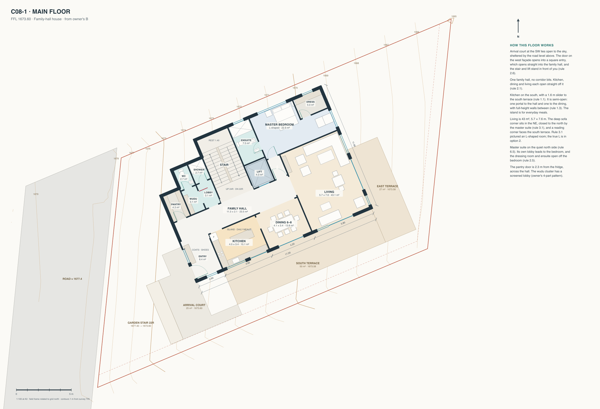
Lower Floor + Garden
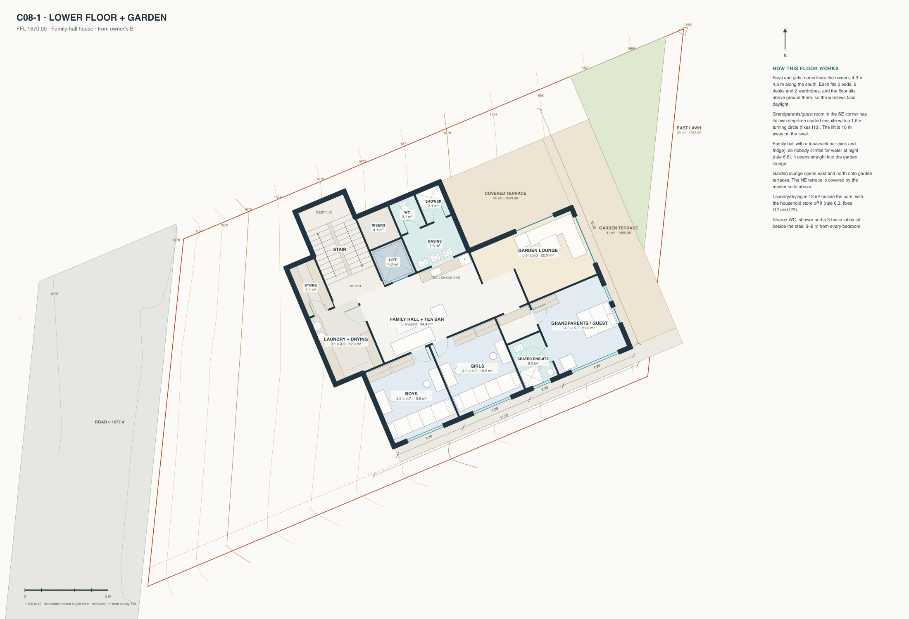
Sections and earthwork
Rule checklist (OWNER_DESIGN_RULES.md, rule 8.1)
| Rule | Status | Evidence |
|---|---|---|
| 2.3.voids.road | PASS · checked | enclosed leftover holes in plate: 0 |
| 2.3.voids.main | PASS · checked | enclosed leftover holes in plate: 0 |
| 2.3.voids.lower | PASS · checked | enclosed leftover holes in plate: 0 |
| 1.1 kitchen→south terrace | PASS · checked | kitchen south wall is façade=True; door(s) [1.6] m onto ['SOUTH TERRACE'] |
| 1.2 kitchen prime frontage | PASS · checked | kitchen spans u 4.6–9.2 on the south façade |
| 1.3 semi-open kitchen | PASS · checked | 2 doorless portals: [('hall', 'kitchen', 1.1), ('kitchen', 'dining', 1.1)]; full-height walls otherwise |
| 1.5 kitchen/dining right-sized | PASS · checked | kitchen 15.1 m², pantry 4.3 m², dining 13.8 m² (3.38 m wide) |
| 2.1 every main room off a hall | PASS · checked | reachable without crossing another main room: {'dining': True, 'kitchen': True, 'living': True, 'master': True, 'boys': True, 'girls': True, 'guest': True, 'lounge': True} |
| 2.5 master not through closet | PASS · checked | bedroom door(s) from ['dress', 'ens', 'mlob'] |
| 2.6a front doors on the west façade | PASS · checked | road door u=0.0 into hall-r; main door u=2.0 into entry; both open-sky, no passage |
| 2.6b straight line door → stair/lift | YOUR DECISION | road: door → 7 m hall → one turn north into the core lobby. Main: door → entry → turn north → turn east along the hall to the stair (two turns). A main door on the hall axis would sit under the garage slab, the passage you rejected. Your call. |
| 3.3 living ≥42 m², ≥5.0 m wide | PASS · checked | living 43.1 m², 5.0 m clear square fits=True |
| 3.1 cozy corner, north closed | designer judgement | living north edge v=5.3; north neighbour = ['MASTER BEDROOM'] |
| 4.2 steps further east going down | PASS · checked | east edges road/main/lower u = [12.6, 19.2, 22.2] |
| 4.3 main-floor terraces S+E | PASS · checked | 77 m² of terrace on the roof of the lower floor |
| 5.5 garage 55–60 m² | PASS · checked | garage 57.1 m² gross |
| 5.1 garage→lift indoors | PASS · checked | door chain garage → core lobby → lift |
| 5.2 one stair, all levels | PASS · checked | stair boxes {(6.8, 1.1, 10.0, 7.3)} |
| 6.5 master main/north + 3 lower bedrooms | PASS · checked | main bedrooms ['MASTER BEDROOM'] (north half=True); lower ['BOYS', 'GIRLS', 'GRANDPARENTS / GUEST'] |
| 6.1 master ensuite | PASS · checked | ensuite door opens from the bedroom |
| 6.6 tea/snack bar downstairs | PASS · checked | tea bar counter with sink + under-counter fridge |
| 6.7 owner's 4.3×4.8 children rooms | PASS · checked | boys/girls clear [(4.18, 4.68, 19.6), (4.18, 4.68, 19.6)] |
| I10 guest seated ensuite | PASS · checked | SEATED ENSUITE 6.0 m² |
| I12 laundry 12–14 m² | PASS · checked | laundry 12.9 m² |
| 2.2 no long corridors | YOUR DECISION | main family hall 11.4 × 2.2 m, rooms on one side open to it (stair 3.2 m, dining). Lower family hall 34 m². Not a double-loaded corridor, but long. Your call. |
| 4.1 south + east for day rooms | designer judgement | on the S/E façades: Kitchen, Dining 6–8, Living; buried NW holds Pantry, Wc, Shower, Wudu, Lobby |
| 2.4 no unnecessary doors | designer judgement | main floor: 8 doorless openings, 8 hinged doors (bedroom, baths, stores, lobby only) |
| 3.2 living has its own hall entry | designer judgement | 1.8 m opening straight from the family hall |
| 4.4 reasonable digging | designer judgement | building cut ≈ 228 m³, deepest 4.2 m at the lower-floor NW core/store corner; outdoor fill ≈ 128 m³ |
| 5.3 stair at the heart | designer judgement | stair box u 6.8–10.0 opens its full 3.2 m width onto the family hall on every floor |
| 5.4 step-free | designer judgement | lift reaches all 3 levels and each level is one flat floor. Threshold details are not designed |
| 6.3 stores not in odd places | designer judgement | household store opens off the laundry beside the core; plant room off the road hall |
| 7.4 standard, comfortable sizes | designer judgement | Master Bedroom 23; Kitchen 15; Dining 6–8 14; Living 43; Garden Lounge 23; Boys 20; Girls 20; Grandparents / Guest 21 m² |
Geometry checks (no overlaps, inside the 1 m S/E setback envelope, no enclosed leftover holes): terraces/paths outside parcel setbacks: {'t-low': 6.83, 'walk-s': 3.01}. Label collisions: none.
Room schedule
| Level | Room | Clear bounding (m) | Clear area (m²) |
|---|---|---|---|
| Road Level | Garage · 2 Cars + Workbench | 6.68 × 8.28 | 55.3 |
| Road Level | Core Lobby | 5.18 × 2.08 | 10.8 |
| Road Level | Entrance Hall | 9.28 × 1.98 | 18.4 |
| Road Level | Quiet Office | 3.08 × 2.98 | 9.2 |
| Road Level | Wc + Shower | 2.08 × 1.58 | 3.3 |
| Road Level | Plant + Tanks | 3.68 × 1.58 | 5.8 |
| Main Floor | Pantry | 1.68 × 2.58 | 4.3 |
| Main Floor | Wc | 1.38 × 1.98 | 2.7 |
| Main Floor | Shower | 1.38 × 1.98 | 2.7 |
| Main Floor | Wudu | 1.38 × 2.28 | 3.1 |
| Main Floor | Lobby | 1.38 × 2.28 | 3.1 |
| Main Floor | Ensuite | 1.98 × 3.78 | 7.5 |
| Main Floor | Dress | 2.68 × 1.88 | 5.0 |
| Main Floor | Master Bedroom | 6.98 × 4.08 | 22.9 |
| Main Floor | Family Hall | 11.28 × 2.08 | 23.5 |
| Main Floor | Entry | 2.48 × 3.38 | 8.4 |
| Main Floor | Kitchen | 4.48 × 3.38 | 15.1 |
| Main Floor | Dining 6–8 | 4.08 × 3.38 | 13.8 |
| Main Floor | Living | 5.68 × 7.58 | 43.1 |
| Lower Floor + Garden | Store | 1.68 × 3.18 | 5.3 |
| Lower Floor + Garden | Risers | 1.98 × 2.08 | 4.1 |
| Lower Floor + Garden | Wc | 1.58 × 1.98 | 3.1 |
| Lower Floor + Garden | Shower | 1.58 × 1.98 | 3.1 |
| Lower Floor + Garden | Basins | 3.28 × 2.28 | 7.5 |
| Lower Floor + Garden | Laundry + Drying | 3.08 × 4.18 | 12.9 |
| Lower Floor + Garden | Family Hall + Tea Bar | 9.28 × 4.18 | 34.4 |
| Lower Floor + Garden | Garden Lounge | 6.58 × 4.18 | 22.9 |
| Lower Floor + Garden | Boys | 4.18 × 4.68 | 19.6 |
| Lower Floor + Garden | Girls | 4.18 × 4.68 | 19.6 |
| Lower Floor + Garden | Seated Ensuite | 2.08 × 2.88 | 6.0 |
| Lower Floor + Garden | Grandparents / Guest | 4.48 × 4.68 | 21.0 |
C08-2 · Reading-bay house · from owner's A
A's quiet NE reading bay and staggered day/night bars are kept. The bay becomes the closed north arm of an L-shaped living room, and the master bedroom takes the middle of the north side. Downstairs, A's parents' corner becomes the grandparents' suite.
Road Level
Main Floor
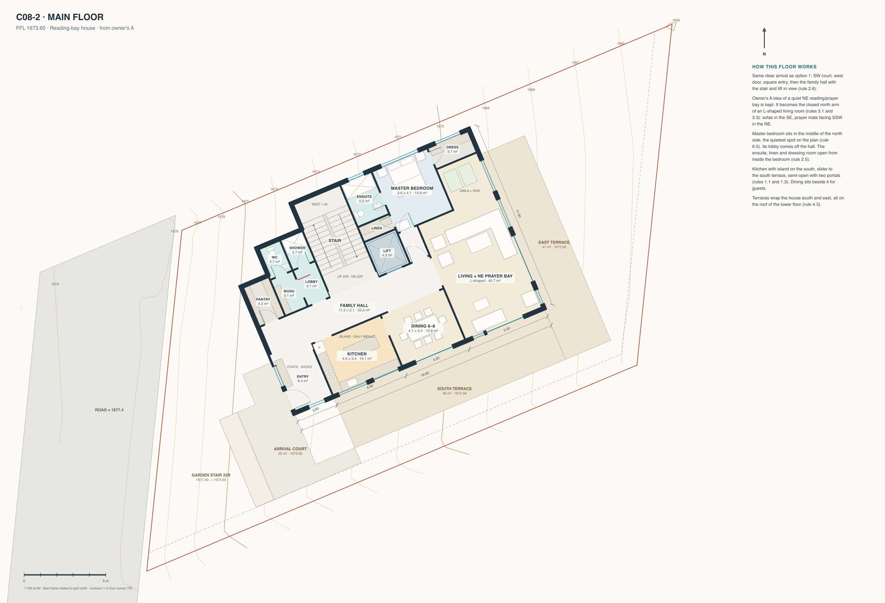
Lower Floor + Garden
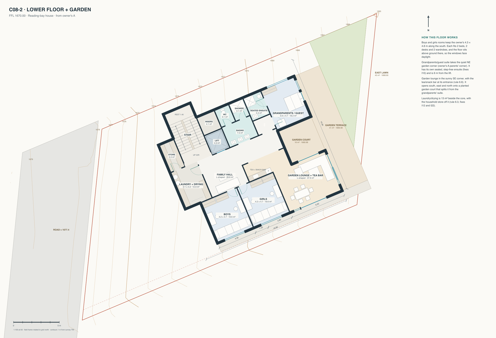
Sections and earthwork
Rule checklist (OWNER_DESIGN_RULES.md, rule 8.1)
| Rule | Status | Evidence |
|---|---|---|
| 2.3.voids.road | PASS · checked | enclosed leftover holes in plate: 0 |
| 2.3.voids.main | PASS · checked | enclosed leftover holes in plate: 0 |
| 2.3.voids.lower | PASS · checked | enclosed leftover holes in plate: 0 |
| 1.1 kitchen→south terrace | PASS · checked | kitchen south wall is façade=True; door(s) [1.6] m onto ['SOUTH TERRACE'] |
| 1.2 kitchen prime frontage | PASS · checked | kitchen spans u 4.6–9.2 on the south façade |
| 1.3 semi-open kitchen | PASS · checked | 2 doorless portals: [('hall', 'kitchen', 1.1), ('kitchen', 'dining', 1.1)]; full-height walls otherwise |
| 1.5 kitchen/dining right-sized | PASS · checked | kitchen 15.1 m², pantry 4.3 m², dining 13.8 m² (3.38 m wide) |
| 2.1 every main room off a hall | PASS · checked | reachable without crossing another main room: {'dining': True, 'kitchen': True, 'living': True, 'master': True, 'boys': True, 'girls': True, 'guest': True, 'lounge': True} |
| 2.5 master not through closet | PASS · checked | bedroom door(s) from ['dress', 'ens', 'linen', 'mlob'] |
| 2.6a front doors on the west façade | PASS · checked | road door u=0.0 into hall-r; main door u=2.0 into entry; both open-sky, no passage |
| 2.6b straight line door → stair/lift | YOUR DECISION | road: door → 7 m hall → one turn north into the core lobby. Main: door → entry → turn north → turn east along the hall to the stair (two turns). A main door on the hall axis would sit under the garage slab, the passage you rejected. Your call. |
| 3.3 living ≥42 m², ≥5.0 m wide | PASS · checked | living 45.7 m², 5.0 m clear square fits=True |
| 3.1 cozy corner, north closed | designer judgement | living north edge v=2.6; north neighbour = ['DRESS'] |
| 4.2 steps further east going down | PASS · checked | east edges road/main/lower u = [12.6, 18.6, 21.6] |
| 4.3 main-floor terraces S+E | PASS · checked | 88 m² of terrace on the roof of the lower floor |
| 5.5 garage 55–60 m² | PASS · checked | garage 57.1 m² gross |
| 5.1 garage→lift indoors | PASS · checked | door chain garage → core lobby → lift |
| 5.2 one stair, all levels | PASS · checked | stair boxes {(6.8, 1.1, 10.0, 7.3)} |
| 6.5 master main/north + 3 lower bedrooms | PASS · checked | main bedrooms ['MASTER BEDROOM'] (north half=True); lower ['BOYS', 'GIRLS', 'GRANDPARENTS / GUEST'] |
| 6.1 master ensuite | PASS · checked | ensuite door opens from the bedroom |
| 6.6 tea/snack bar downstairs | PASS · checked | tea bar counter with sink + under-counter fridge |
| 6.7 owner's 4.3×4.8 children rooms | PASS · checked | boys/girls clear [(4.18, 4.68, 19.6), (4.18, 4.68, 19.6)] |
| I10 guest seated ensuite | PASS · checked | SEATED ENSUITE 5.3 m² |
| I12 laundry 12–14 m² | PASS · checked | laundry 12.9 m² |
| 2.2 no long corridors | YOUR DECISION | main family hall 11.4 × 2.2 m, rooms on one side open to it (stair 3.2 m, dining). Lower family hall 29 m². Not a double-loaded corridor, but long. Your call. |
| 4.1 south + east for day rooms | designer judgement | on the S/E façades: Kitchen, Dining 6–8, Living + Ne Prayer Bay; buried NW holds Pantry, Wc, Shower, Wudu, Lobby |
| 2.4 no unnecessary doors | designer judgement | main floor: 8 doorless openings, 9 hinged doors (bedroom, baths, stores, lobby only) |
| 3.2 living has its own hall entry | designer judgement | 1.8 m opening straight from the family hall |
| 4.4 reasonable digging | designer judgement | building cut ≈ 229 m³, deepest 4.2 m at the lower-floor NW core/store corner; outdoor fill ≈ 141 m³ |
| 5.3 stair at the heart | designer judgement | stair box u 6.8–10.0 opens its full 3.2 m width onto the family hall on every floor |
| 5.4 step-free | designer judgement | lift reaches all 3 levels and each level is one flat floor. Threshold details are not designed |
| 6.3 stores not in odd places | designer judgement | household store opens off the laundry beside the core; plant room off the road hall |
| 7.4 standard, comfortable sizes | designer judgement | Master Bedroom 15; Kitchen 15; Dining 6–8 14; Living + Ne Prayer Bay 46; Boys 20; Girls 20; Grandparents / Guest 18; Garden Lounge + Tea Bar 38 m² |
Geometry checks (no overlaps, inside the 1 m S/E setback envelope, no enclosed leftover holes): terraces/paths outside parcel setbacks: {'t-low': 4.16, 'walk-s': 2.41}. Label collisions: none.
Room schedule
| Level | Room | Clear bounding (m) | Clear area (m²) |
|---|---|---|---|
| Road Level | Garage · 2 Cars + Workbench | 6.68 × 8.28 | 55.3 |
| Road Level | Core Lobby | 5.18 × 2.08 | 10.8 |
| Road Level | Entrance Hall | 9.28 × 1.98 | 18.4 |
| Road Level | Quiet Office | 3.08 × 2.98 | 9.2 |
| Road Level | Wc + Shower | 2.08 × 1.58 | 3.3 |
| Road Level | Plant + Tanks | 3.68 × 1.58 | 5.8 |
| Main Floor | Pantry | 1.68 × 2.58 | 4.3 |
| Main Floor | Wc | 1.38 × 1.98 | 2.7 |
| Main Floor | Shower | 1.38 × 1.98 | 2.7 |
| Main Floor | Wudu | 1.38 × 2.28 | 3.1 |
| Main Floor | Lobby | 1.38 × 2.28 | 3.1 |
| Main Floor | Ensuite | 1.98 × 2.78 | 5.5 |
| Main Floor | Linen | 1.98 × 0.88 | 1.7 |
| Main Floor | Master Bedroom | 3.58 × 4.08 | 14.6 |
| Main Floor | Dress | 2.68 × 1.38 | 3.7 |
| Main Floor | Family Hall | 11.28 × 2.08 | 23.5 |
| Main Floor | Entry | 2.48 × 3.38 | 8.4 |
| Main Floor | Kitchen | 4.48 × 3.38 | 15.1 |
| Main Floor | Dining 6–8 | 4.08 × 3.38 | 13.8 |
| Main Floor | Living + Ne Prayer Bay | 5.08 × 10.28 | 45.7 |
| Lower Floor + Garden | Store | 1.68 × 3.18 | 5.3 |
| Lower Floor + Garden | Risers | 1.98 × 2.08 | 4.1 |
| Lower Floor + Garden | Wc | 1.58 × 1.98 | 3.1 |
| Lower Floor + Garden | Shower | 1.58 × 1.98 | 3.1 |
| Lower Floor + Garden | Basins | 3.28 × 2.28 | 7.5 |
| Lower Floor + Garden | Laundry + Drying | 3.08 × 4.18 | 12.9 |
| Lower Floor + Garden | Boys | 4.18 × 4.68 | 19.6 |
| Lower Floor + Garden | Girls | 4.18 × 4.68 | 19.6 |
| Lower Floor + Garden | Family Hall | 9.28 × 4.18 | 28.8 |
| Lower Floor + Garden | Seated Ensuite | 1.98 × 2.68 | 5.3 |
| Lower Floor + Garden | Grandparents / Guest | 3.88 × 4.68 | 18.2 |
| Lower Floor + Garden | Garden Lounge + Tea Bar | 8.88 × 6.68 | 37.9 |
C08-3 · Kitchen-at-the-heart house · from owner's C
C's day sequence is kept: dining by the entrance, kitchen in the middle, living at the east end. C's road-level living and lower-floor parents break rules 4.3, 5.5 and 6.5, so the day floor stays below the garage and the master suite stays north. The suite gets its own NE terrace.
Road Level
Main Floor
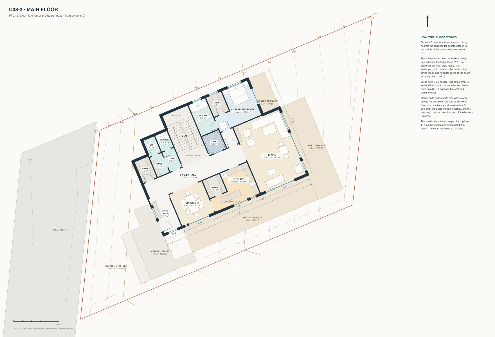
Lower Floor + Garden
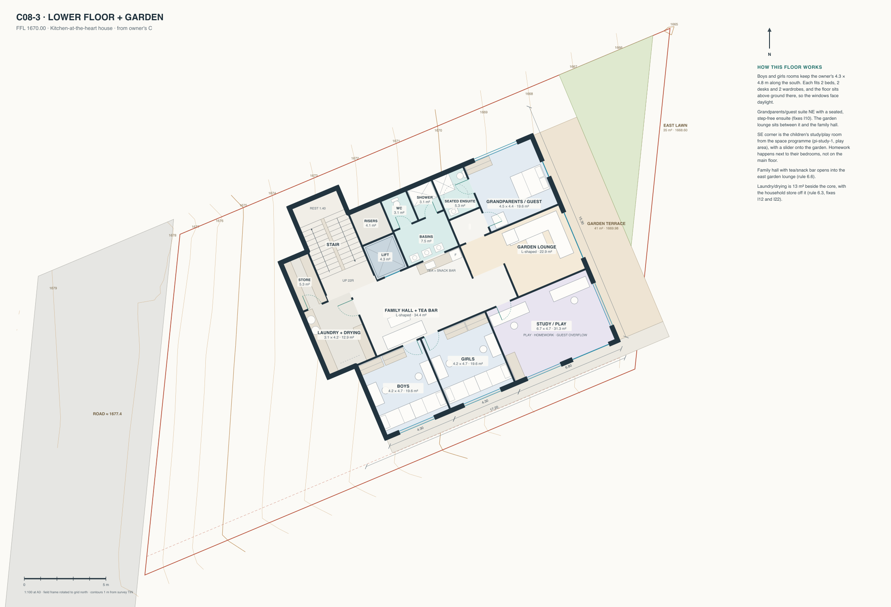
Sections and earthwork
Rule checklist (OWNER_DESIGN_RULES.md, rule 8.1)
| Rule | Status | Evidence |
|---|---|---|
| 2.3.voids.road | PASS · checked | enclosed leftover holes in plate: 0 |
| 2.3.voids.main | PASS · checked | enclosed leftover holes in plate: 0 |
| 2.3.voids.lower | PASS · checked | enclosed leftover holes in plate: 0 |
| 1.1 kitchen→south terrace | PASS · checked | kitchen south wall is façade=True; door(s) [1.6] m onto ['SOUTH TERRACE'] |
| 1.2 kitchen prime frontage | PASS · checked | kitchen spans u 8.2–13.6 on the south façade |
| 1.3 semi-open kitchen | PASS · checked | 2 doorless portals: [('hall', 'kitchen', 1.1), ('kitchen', 'dining', 1.2)]; full-height walls otherwise |
| 1.5 kitchen/dining right-sized | PASS · checked | kitchen 15.3 m², pantry 4.1 m², dining 14.7 m² (3.78 m wide) |
| 2.1 every main room off a hall | PASS · checked | reachable without crossing another main room: {'dining': True, 'kitchen': True, 'living': True, 'master': True, 'boys': True, 'girls': True, 'guest': True, 'lounge': True, 'study': True} |
| 2.5 master not through closet | PASS · checked | bedroom door(s) from ['dress', 'ens', 'mlob'] |
| 2.6a front doors on the west façade | PASS · checked | road door u=0.0 into hall-r; main door u=2.0 into entry; both open-sky, no passage |
| 2.6b straight line door → stair/lift | YOUR DECISION | road: door → 7 m hall → one turn north into the core lobby. Main: door → entry → turn north → turn east along the hall to the stair (two turns). A main door on the hall axis would sit under the garage slab, the passage you rejected. Your call. |
| 3.3 living ≥42 m², ≥5.0 m wide | PASS · checked | living 43.2 m², 5.0 m clear square fits=True |
| 3.1 cozy corner, north closed | designer judgement | living north edge v=5.4; north neighbour = ['MASTER BEDROOM'] |
| 4.2 steps further east going down | PASS · checked | east edges road/main/lower u = [12.6, 19.2, 22.2] |
| 4.3 main-floor terraces S+E | PASS · checked | 87 m² of terrace on the roof of the lower floor |
| 5.5 garage 55–60 m² | PASS · checked | garage 57.1 m² gross |
| 5.1 garage→lift indoors | PASS · checked | door chain garage → core lobby → lift |
| 5.2 one stair, all levels | PASS · checked | stair boxes {(6.8, 1.1, 10.0, 7.3)} |
| 6.5 master main/north + 3 lower bedrooms | PASS · checked | main bedrooms ['MASTER BEDROOM'] (north half=True); lower ['BOYS', 'GIRLS', 'GRANDPARENTS / GUEST'] |
| 6.1 master ensuite | PASS · checked | ensuite door opens from the bedroom |
| 6.6 tea/snack bar downstairs | PASS · checked | tea bar counter with sink + under-counter fridge |
| 6.7 owner's 4.3×4.8 children rooms | PASS · checked | boys/girls clear [(4.18, 4.68, 19.6), (4.18, 4.68, 19.6)] |
| I10 guest seated ensuite | PASS · checked | SEATED ENSUITE 5.3 m² |
| I12 laundry 12–14 m² | PASS · checked | laundry 12.9 m² |
| 2.2 no long corridors | YOUR DECISION | main family hall 11.6 × 2.2 m, rooms on one side open to it (stair 3.2 m, dining). Lower family hall 34 m². Not a double-loaded corridor, but long. Your call. |
| 4.1 south + east for day rooms | designer judgement | on the S/E façades: Dining 6–8, Kitchen, Living; buried NW holds Store, Wc, Shower, Wudu, Lobby |
| 2.4 no unnecessary doors | designer judgement | main floor: 8 doorless openings, 9 hinged doors (bedroom, baths, stores, lobby only) |
| 3.2 living has its own hall entry | designer judgement | 1.8 m opening straight from the family hall |
| 4.4 reasonable digging | designer judgement | building cut ≈ 229 m³, deepest 4.2 m at the lower-floor NW core/store corner; outdoor fill ≈ 128 m³ |
| 5.3 stair at the heart | designer judgement | stair box u 6.8–10.0 opens its full 3.2 m width onto the family hall on every floor |
| 5.4 step-free | designer judgement | lift reaches all 3 levels and each level is one flat floor. Threshold details are not designed |
| 6.3 stores not in odd places | designer judgement | household store opens off the laundry beside the core; plant room off the road hall |
| 7.4 standard, comfortable sizes | designer judgement | Master Bedroom 16; Dining 6–8 15; Kitchen 15; Living 43; Boys 20; Girls 20; Grandparents / Guest 20; Garden Lounge 23; Study / Play 31 m² |
Geometry checks (no overlaps, inside the 1 m S/E setback envelope, no enclosed leftover holes): terraces/paths outside parcel setbacks: {'t-low': 6.83, 'walk-s': 3.01}. Label collisions: none.
Room schedule
| Level | Room | Clear bounding (m) | Clear area (m²) |
|---|---|---|---|
| Road Level | Garage · 2 Cars + Workbench | 6.68 × 8.28 | 55.3 |
| Road Level | Core Lobby | 5.18 × 2.08 | 10.8 |
| Road Level | Entrance Hall | 9.28 × 1.98 | 18.4 |
| Road Level | Quiet Office | 3.08 × 2.98 | 9.2 |
| Road Level | Wc + Shower | 2.08 × 1.58 | 3.3 |
| Road Level | Plant + Tanks | 3.68 × 1.58 | 5.8 |
| Main Floor | Pantry | 1.98 × 2.08 | 4.1 |
| Main Floor | Store | 1.68 × 2.58 | 4.3 |
| Main Floor | Wc | 1.38 × 1.98 | 2.7 |
| Main Floor | Shower | 1.38 × 1.98 | 2.7 |
| Main Floor | Wudu | 1.38 × 2.28 | 3.1 |
| Main Floor | Lobby | 1.38 × 2.28 | 3.1 |
| Main Floor | Ensuite | 1.98 × 3.78 | 7.5 |
| Main Floor | Dress | 1.78 × 2.38 | 4.2 |
| Main Floor | Master Bedroom | 4.98 × 4.18 | 16.1 |
| Main Floor | Family Hall | 11.48 × 2.08 | 23.9 |
| Main Floor | Entry | 2.08 × 3.78 | 7.9 |
| Main Floor | Dining 6–8 | 3.88 × 3.78 | 14.7 |
| Main Floor | Kitchen | 5.28 × 3.78 | 15.3 |
| Main Floor | Living | 5.48 × 7.88 | 43.2 |
| Lower Floor + Garden | Store | 1.68 × 3.18 | 5.3 |
| Lower Floor + Garden | Risers | 1.98 × 2.08 | 4.1 |
| Lower Floor + Garden | Wc | 1.58 × 1.98 | 3.1 |
| Lower Floor + Garden | Shower | 1.58 × 1.98 | 3.1 |
| Lower Floor + Garden | Basins | 3.28 × 2.28 | 7.5 |
| Lower Floor + Garden | Laundry + Drying | 3.08 × 4.18 | 12.9 |
| Lower Floor + Garden | Boys | 4.18 × 4.68 | 19.6 |
| Lower Floor + Garden | Girls | 4.18 × 4.68 | 19.6 |
| Lower Floor + Garden | Family Hall + Tea Bar | 9.28 × 4.18 | 34.4 |
| Lower Floor + Garden | Seated Ensuite | 1.98 × 2.68 | 5.3 |
| Lower Floor + Garden | Grandparents / Guest | 4.48 × 4.38 | 19.6 |
| Lower Floor + Garden | Garden Lounge | 6.58 × 4.18 | 22.9 |
| Lower Floor + Garden | Study / Play | 6.68 × 4.68 | 31.3 |
Your decisions
- Your rules disagree on where the parents' suite goes. Rule 6.5 (stmt-018) says the main floor, quiet north side. Rule 6.7 also names your own B arrangement, with the parents' suite SW/W on the main floor. All three options follow 6.5. Do you want a version with B's SW suite?
- Kitchen size. Rule 1.5 (stmt-021, the later statement) says 15–17 m², and rule 6.7 mentions ~18–22 m². These options use 15–15.3 m² plus a pantry, because stmt-021 says kitchens were too big.
- East lawn. stmt-018 hoped for a ~10 m flat lawn with the lower floor ending at u 20. The 42 m² living room you asked for pushes the main floor to u 18.6–19.2 and the lower floor to u 21.6–22.2. That leaves a 3 m garden terrace at 1669.98 plus a lawn of 35–45 m² at 1668.60. A larger lawn needs a smaller living room or a narrower garden terrace.
- Main hall length (rule 2.2). The family hall is 2.1 m wide and about 9 m from the entry to the living room. It is open to the stair and the dining room, but it is long. Say if you would rather trade some dining or hall area for a shorter hall.
- Main-floor entry route (rule 2.6). The west door is open to the sky, with no passage, but you turn twice to reach the stair: into the entry, north, then east. Putting the door on the hall axis would put it under the garage slab, which is the passage you rejected. Is the two-turn entry acceptable?
- Downstairs family hall. It is 30–34 m² because it also serves as the children's sitting room with the tea bar. It could shrink if the garden lounge takes that role.
- North terrace (rule 4.3). Only 1.1 m separates the house from the north boundary, so options 1–2 have no north terrace. Option 3 has a private NE master terrace.